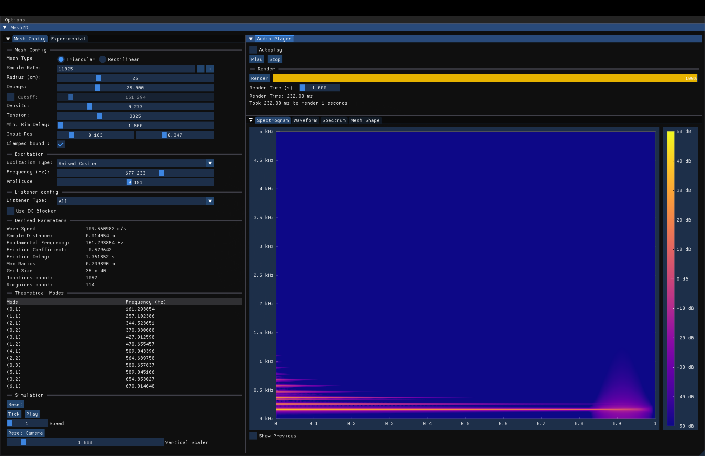
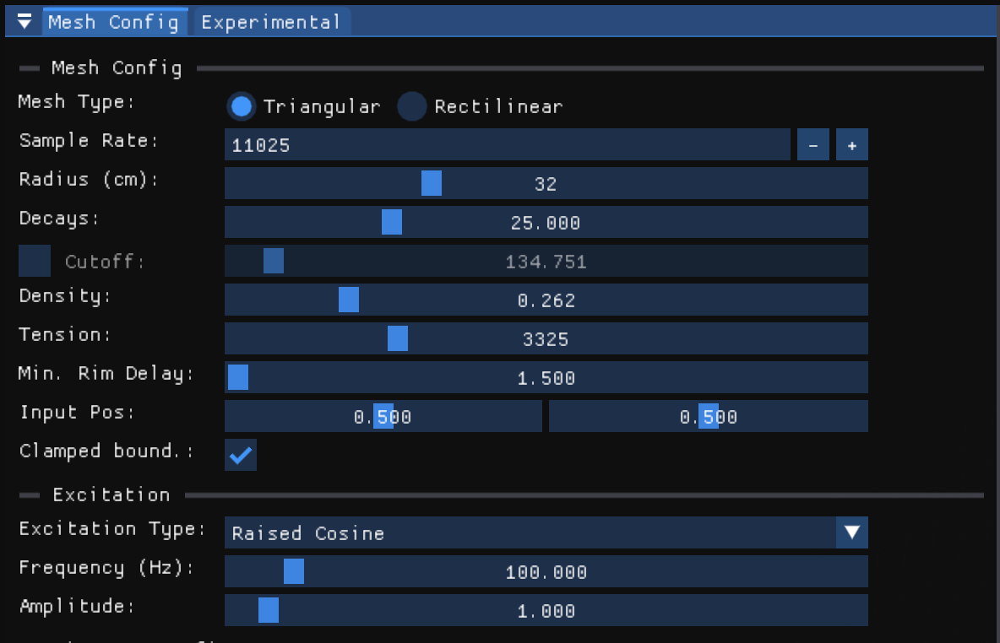
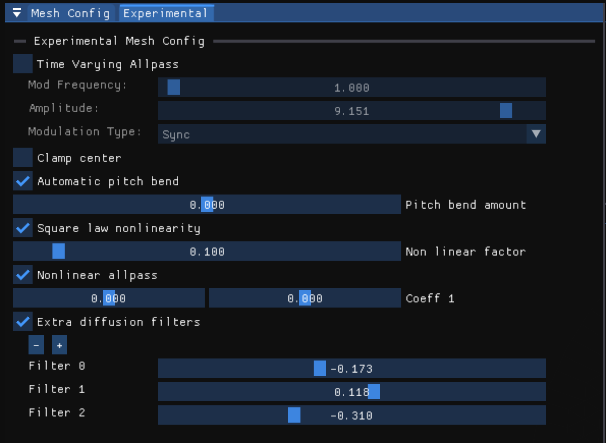
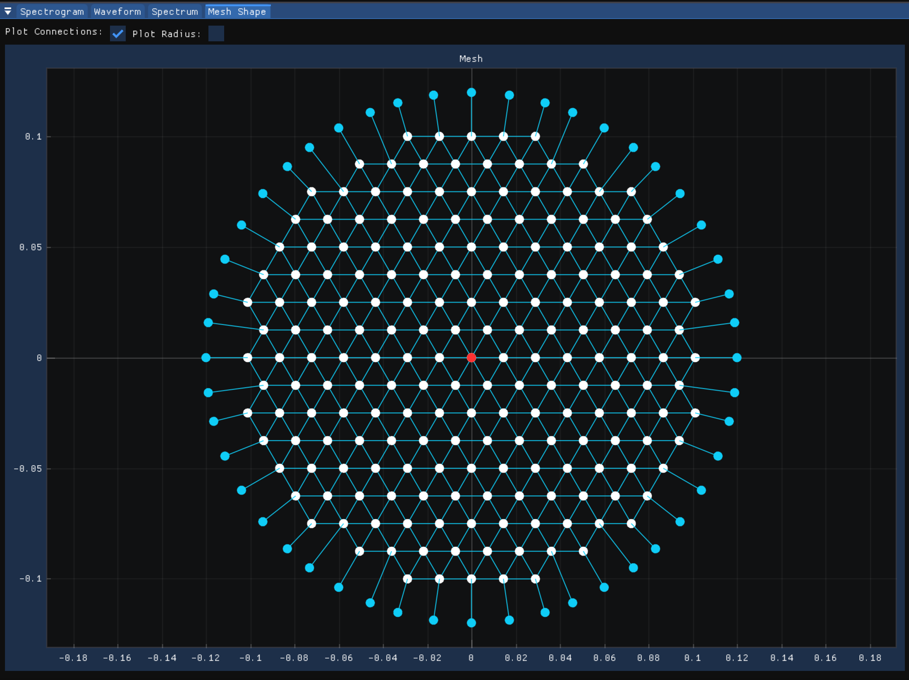
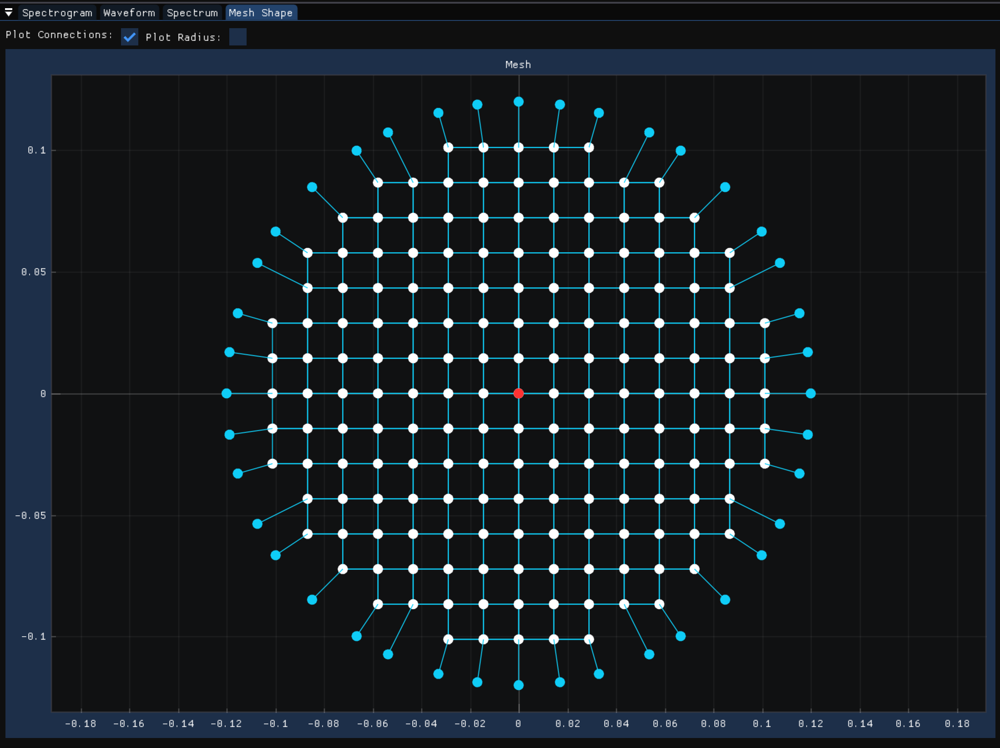
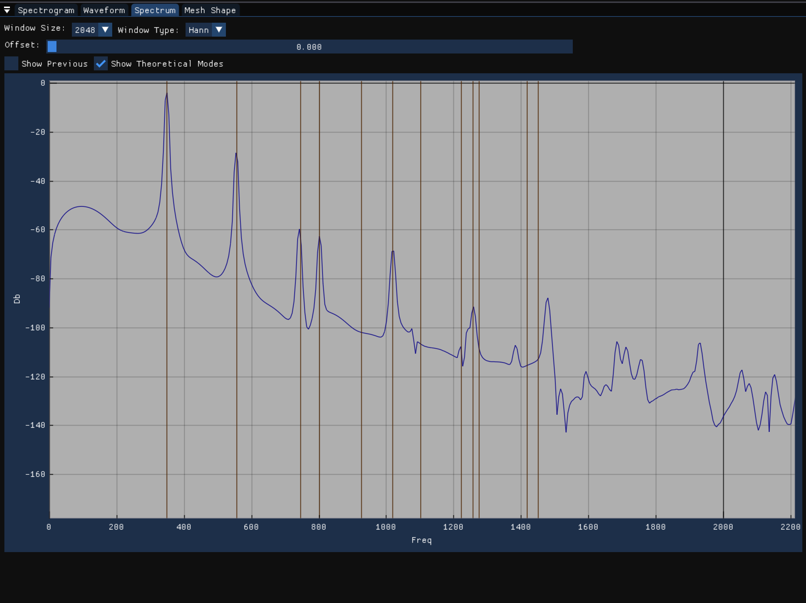
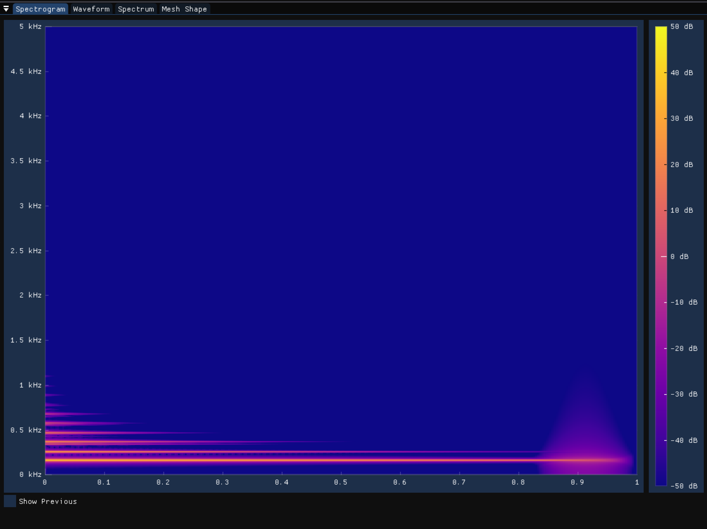
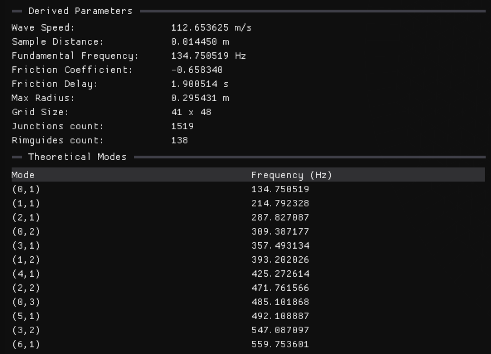

A sandbox application to experiment with 2D digital waveguide mesh
Introduction
In this paper, I will present a sandbox application made to experiment with physical model of circular membranes using 2D digital waveguides.
While my goal for this project was to model the multiple components of a drum, it became clear that simply modeling a circular membrane that sounds like a drum is already a complex task. This is why I decided to focus on this part of the project for now. The sandbox application I am presenting here should make it easier to experiment with all of the different aspects present in the physical model of a circular membrane implemented using 2D digital waveguides.
Physical Modeling of a circular membrane
The first step in modeling a circular membrane, or any 2D object for that matter, is to solve the 2D wave equation:
\[\begin{equation*} u_{tt} = c^2 \Delta u \end{equation*}\]
As demonstrated by Van Duyne and Smith [1], the 2D digital waveguide mesh can be used to accurately model the wave equation. As opposed to its 1D counterpart, there is more than one way to implement a 2D digital waveguide mesh. Maybe the most common way is to use the rectilinear mesh, composed of a grid of interconnected 1D waveguides.
While probably the simplest mesh to implement, the rectilinear mesh suffers from quite a bit of dispersion error which can result in mistuning of the higher modes of the membrane[1].
Another popular mesh configuration is the triangular mesh. Composed of a series of 6-port junctions, the triangular mesh is slightly more complex to implement but has the advantage of having a much lower dispersion error than the rectilinear mesh [2].
The rectilinear mesh is implemented by the RectilinearMesh class and the triangular mesh is implemented by the TriMesh class.
Modeling the circular boundary
The next step is to model the circular boundary. By using the rectilinear or triangular mesh alone, the best we can do is to approximate the circular boundary given the naturally jagged edge of the meshes. To get a more accurate representation of the circular boundary, Laird proposes the use of special 1D waveguides called ‘rimguides’ [3]. For each junction on the boundary of the membrane, a rimguide is connected to that junction. The length of each rimguide is set such that a wave traveling from one side of the membrane to the other will take the same amount of time as it would in an ideal membrane. Figure 5 shows a triangular mesh with rimguides (green nodes and dotted lines) connected to each boundary node (in blue).
The simplest rimguide will have a minimal delay of 1.5 samples. A 1 sample delay is incurred due to the nature of the waveguide mesh itself and the 0.5 sample delay is due to the fact that allpass interpolation is used inside the rimguide and that type of interpolation works best for delays between 0.5 and 1.5 samples.
Given this information, the radius of the mesh will need to be adjusted to account for the delay of the rimguides. This new radius (red circle in Figure 5) is given by the following formula:
\[\begin{equation*} r_{new} = r_{old} - \frac{\tau_{min}}{2} * s_d \end{equation*}\]
Where \(r_{old}\) is the radius of the mesh without rimguides, \(\tau_{min} = 1.5\) is the minimal delay of the rimguides and \(s_d\) is the spatial distance between two nodes of the mesh. The division by 2 is due to the fact that the rimguide models the wave traveling from the boundary node to the rim and back.
The spatial distance \(s_d\) is given by the following formula: \[\begin{equation*} s_d = \sqrt{2} \frac{c}{f_s} \end{equation*}\]
Where \(c\) is the speed of sound in the membrane and \(f_s\) is the sampling frequency. The \(\sqrt{2}\) factor is due to the nominal wave speed in a 2D mesh [[1]][2].
The speed of sound \(c\) in the membrane can be found with the following formula[3]: \[\begin{equation*} c = \sqrt{\frac{T}{\sigma}} \end{equation*}\]
Where \(T\) is the tension of the membrane in \(\frac{N}{m}\) and \(\sigma\) is the density of the membrane in \(\frac{kg}{m^2}\).
Viscous friction
So far the model is lossless. To account for viscous friction, we can add a lowpass filter to our rimguides. The coefficient for the lowpass filter is given by the following formula [3]:
\[\begin{equation*} \alpha =\frac{1 - G(\omega)\left(G(\omega)\cos(\omega) + \sqrt{G(\omega)^2(\cos^2\omega-1)+2-2\cos\omega}\right)}{G(\omega)^2 - 1} \end{equation*}\]
Where \(G(\omega)\) is the gain of the filter at frequency \(\omega\). The gain of the filter is given by the following formulas:
\[\begin{align*} G(\omega) &= 10 ^ \frac{L_B(\omega)}{20}\\ L_B(\omega) &= L_\omega \frac{2r}{c} \end{align*}\]
Where \(L_\omega\) is the desired decay rate at frequency \(\omega\), \(r\) is the radius of the membrane and \(c\) is the speed of sound in the membrane.
Since this lowpass filter introduces an additional delay into our rimguide, the radius of the mesh will need to be adjusted again to account for this delay. The delay incurred by the lowpass filter is given by the following formula:
\[\begin{equation*} \tau_{lp} = \frac{\arctan(\frac{-\alpha sin\omega}{1 + \alpha cos\omega})}{\omega} \end{equation*}\]
Where \(\omega\) is the cutoff frequency of the lowpass filter in radians per second.
Preliminary results
Here’s what the current model sounds like when excited with a simple raised cosine impulse:
32 cm radius, center excitation
32 cm radius, off-center excitation
Experimentation
Once I had a working model of a circular membrane, I wanted to experiment with different aspect of the model.
Adjusting the minimum delay of the rimguides
The first thing I wanted to experiment with was the minimum delay of the rimguides. In theory, we want to minimize the delay of the rimguides to minimize the error introduced by the rimguides. However, a longer rimguide delay will also reduce the number of junctions needed to model the membrane, so I was curious to see exactly how much of a difference the delay of the rimguides would make.
{kind=link}
{kind=link}
While the difference between 1.5 sample minimum delay rimguides and 3 sample minimum delay rimguides is quite small, we can see a noticeable pitch shift with 9 sample minimum delay rimguides. While the mesh with 1.5 sample minimum delay rimguides requires 1519 junctions, this number is reduced to 1015 junctions with a 9 sample minimum delay rimguides. Most importantly, the characteristic modes of the membrane are still present with 9 sample minimum delay rimguides.
Time-varying rimguides delay
Anothe reason why I wanted to experiment with the rimguides delay is that I wanted to see if I could use time-varying delay to model the effect of the membrane stretching or shrinking. Time-varying delaylines are common in a lot of digital audio effects (chorus, flanger, etc.) and are also often used in 1D digital waveguides to model vibrato or pitch bending.
Several modulation techniques were tested to modulate the delay of the rimguides. For all of these techniques, a sine wave was used as the modulation signal.
- Sync
- Each rimguide is modulated by the same sine wave (same phase, frequency, and amplitude). This creates a vibrato effect.
- Phase Offset
- Each rimguide is modulated by the same sine wave offset by a certain phase amount in relation to its neighbor. The effect on the sound is much more subtle than the sync modulation.
- Random Frequency
- Each rimguide is modulated by a sine wave with a random frequency. The random frequency is controlled by secondary parameters that dictate how much the frequency can vary from the base frequency.
- Random Frequency and Amplitude
- Each rimguide is modulated by a sine wave with a random frequency and amplitude. The random frequency and amplitude are controlled by secondary parameters that dictate how much the frequency and amplitude can vary from the base frequency and amplitude.
Automatic pitch bend
A well known nonlinear effect of a drum membrane is the pitch glide downward that occurs when the membrane is struck hard[4]. By adding a simple envelope follower inside the rimguides, I was able to modulate the delay of the rimguides based on the amplitude of the pressure wave at the boundary. The envelope follower is implemented as a simple two poles lowpass filter.
Clamped vs Free boundary conditions
By default, a clamped boundary condition is used for the membrane. This means that the displacement of the membrane at the boundary is fixed and a phase inversion is applied to the reflected wave. I added the ability to switch between clamped and free boundary conditions to see how it would affect the sound of the membrane.
Clamped boundary condition
Free boundary condition
It is also possible to ‘clamp’ the center of the membrane. The center junction is removed and rimguides are added to the center of the membrane. This was partly inspired by how cymbals are usually mounted in the center while the edge of the cymbal is free to vibrate.
Square law nonlinearity
Also implemented is a simple square law nonlinearity, as presented by Pierce and Van Duyne [5].
The nonlinearity was added to the rimguides. Apart from severely damping the sound, I was not able to get any interesting sound out of this system.
Passive Nonlinear Allpass Filter
Also from Pierce and Van Duyne, the passive nonlinear allpass filter is a filter where the coefficient alternate between two values, depending on the sign of the internal state of the filter [5]. The idea is to model a string terminated by a string which coefficient changes depending on if the spring is compressed or extended.
While it is difficult to tune correctly, it is possible to get some interesting sounds out of this system.
Base sound
With passive nonlinear filter
Additional diffusion filters
Finally, each rimguides can support an abitrary amount of diffusion filters. The filters are implemented as a series of cascaded allpass filters.
Base sound
With 4 additional diffusion filters
2D Mesh Sandbox
2D Mesh Sandbox is a C++ application that allows you to experiment with the physical model of a circular membrane using 2D digital waveguides. The application uses Dear ImGui and ImPlot for the user interface, RtAudio for audio output and libsndfile for audio file output and input. The source code is available on GitHub

Config

Experimental config

Mesh viewer
Triangular mesh 
Rectilinear mesh 
Spectrum viewer

Spectrogram viewer

Derived Parameters
